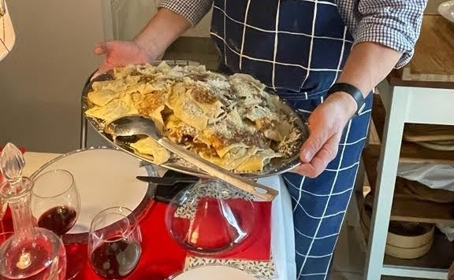

Agnolotti al sugo d'arrosto
Questa ricetta rispecchia un poco la mia famiglia. Mio padre era di Alessandria e mia madre era nata a Torino. Queste due città hanno una tradizione di agnolotti leggermente diversa: arrosto a Torino, brasato ad…